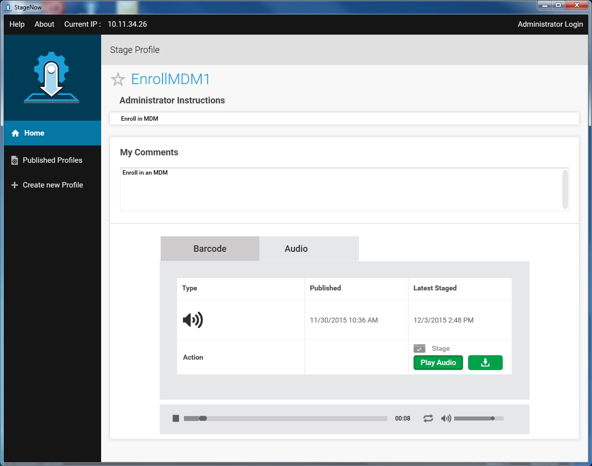
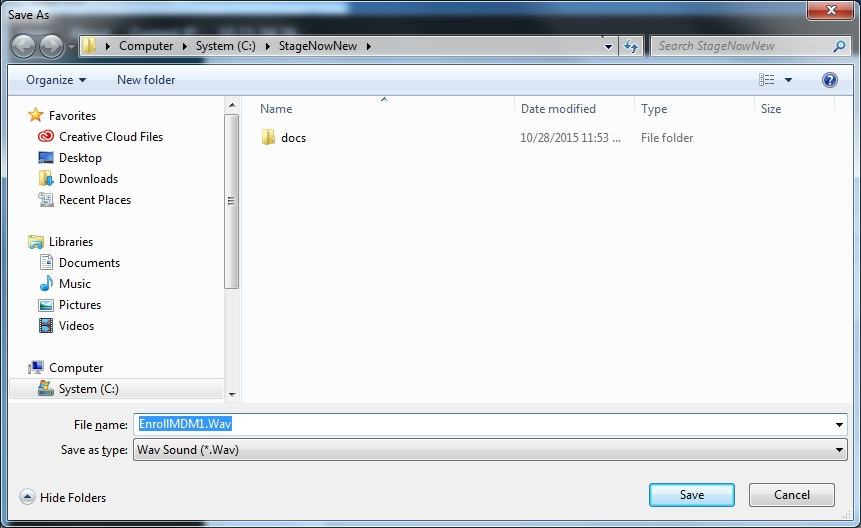
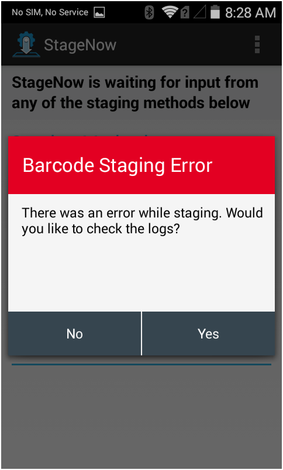
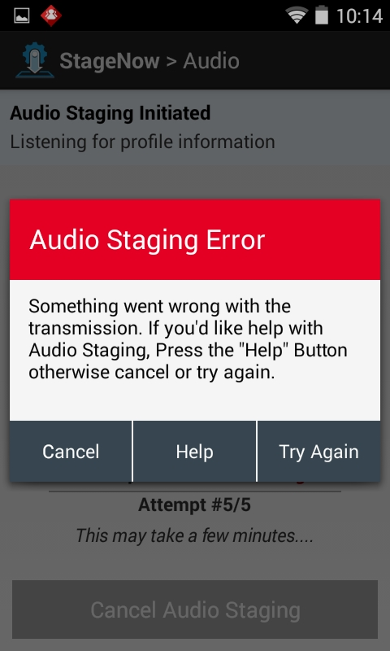
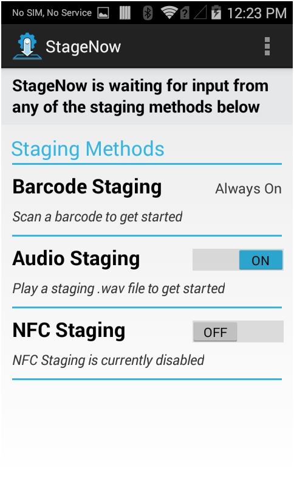
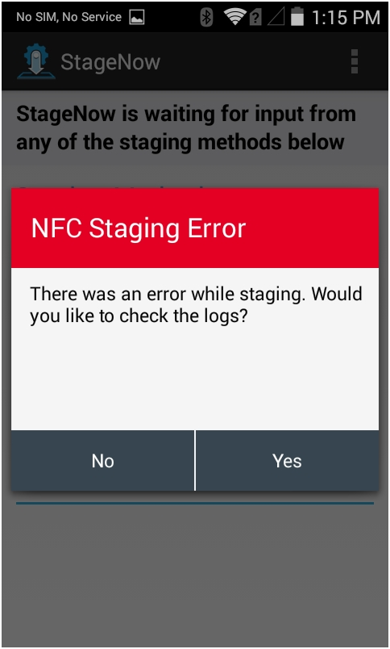
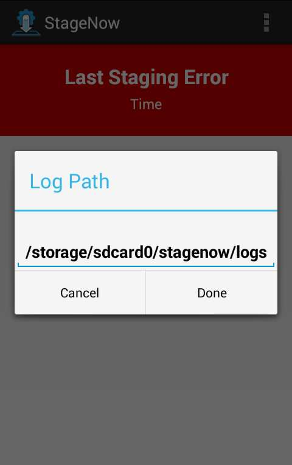
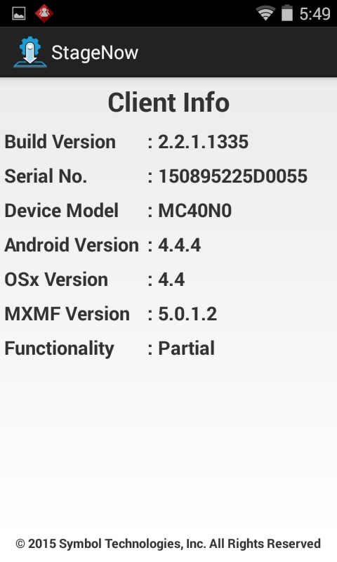
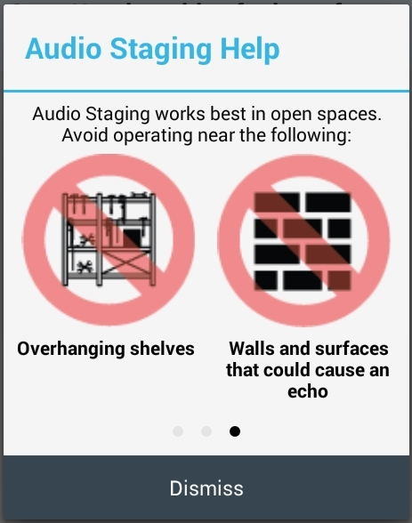

简介
本部分提供以下方面的信息：部署操作员如何使用 StageNow 工作站工具和客户端，选择和阅读 StageNow 条码或 NFC 标签，或生成音频配置文件，以配置目标设备并为设备部署配置文件材料。
如果设备不包括 StageNow 客户端，请使用快速部署客户端进行配置。
选择一个配置文件用于部署
选择一个配置文件以部署设备：
在主机上，从“开始”菜单选择“StageNow”图标，以打开工作站工具。部署操作员主页屏幕出现。请参阅主页屏幕，获取字段描述。

选择一个配置文件以部署设备。
选择部署材料
选择条码或 NFC 部署材料
此部署方法将来自选定配置文件的配置信息写入条码或 NFC 标签中，以供客户端设备读取，从而初始化部署。
选择条码或 NFC 选项卡。

如果需要，请在“我的备注”字段输入操作员备注。
选择部署设备的资料，或选择“全选”，以选择所有提供的材料。
选择部署，以生成部署材料的 PDF 版本。

选择用于部署的音频文件
此部署方法将来自选定配置文件的配置信息写入音频文件中。在客户端设备附近播放音频文件，以便于初始化这些设备上的部署。
选择“音频”选项卡。如果这是第一次使用此功能，则导航提供指定用于部署的技术和环境要求的帮助屏幕。
通过指示屏幕进行，然后选择“完成”以关闭导航。

选择“播放音频”，以播放音频部署材料，从而部署设备。请参阅音频部署，获取有关准备客户端接收音频文件的信息。

如果需要，选择“下载”图标，将音频文件下载到主机中。

导航到要将音频文件放入的文件夹，然后选择“保存”。
设备部署
在设备上，选择 StageNow 图标，以启动 StageNow 客户端。
注意：StageNow 客户端需要 DataWedge 配置文件，以读取条码数据，但是恢复 DataWedge 则代表放弃当前 StageNow 配置。如果 StageNow 不可以在恢复 DataWedge 之后扫描条码，那么请在设备上退出并重新启动 StageNow 客户端。

应用程序列出了可用的部署方法。

注意：
MC40 设备不支持 NFC，并针对“NFC 部署”部分显示以下文本：不可用，未检测到 NFC 读取器。
条码部署
通过部署条码，将选定的配置文件部署到设备中：
条码部署选项始终处于开启状态。扫描从 StageNow 工作站工具打印下来的条码。
屏幕会通过复选标记，指明已扫描的条码，剩下的条码则可以扫描。继续扫描所有部署条码。
成功部署后，设备将显示以下屏幕。

如果在部署期间发生错误，将弹出以下窗口。选择“是”，查看排除故障日志。

音频部署
要通过音频文件将选定的配置文件部署到设备中：
在需要部署的客户端设备上，将音频部署选项设置为开启。
将设备放置于将会播放音频 .wav 文件的主机扬声器附近。
注意：
为获得最佳效果，请在安静环境下，使用桌面扬声器，并确保扬声器与设备之间没有阻碍物。
播放音频 .wav 文件，以启动设备上的部署。

客户端最多可尝试 5 次部署。如果 5 次尝试后，仍未部署成功，就是音频传输出现错误，将出现以下错误信息弹出窗口。请选择“取消”，以取消部署，并重试以继续尝试部署，或选择“帮助”获取音频部署提示。

成功部署后，设备将显示成功屏幕。
如果在部署期间发生错误，将弹出以下窗口。选择“是”，查看排除故障日志。

NFC 部署
NFC 部署要求客户端设备配有一个 NFC 读取器。
通过 NFC 标签，将选定的配置文件部署到设备中：
在需要部署的客户端设备上，将 NFC 部署选项设置为开启。

读取包含导出的配置文件数据的 NFC 标签。请参阅 NFC 文档，获取恰当方法。客户端设备在处理标签时，返回至原来的应用程序。
成功部署后，设备将显示成功屏幕。
如果在部署期间发生错误，将弹出以下窗口。选择“是”，查看排除故障日志。

部署等待条件
以下弹出屏幕可能会在部署期间出现，这表明设备正在执行操作且部署将在屏幕结束时完成。
初始化
根据设备重启次数，MX 框架需要最多 2 分钟时间启动，以便准备部署。如果此过程中启动部署，StageNow 客户端会通过以下弹出窗口提示。

获取 IP
设备正在获取 IP 地址时，以下弹出窗口出现。当操作员扫描条码并将设备放到以太网通讯座时，这通常会在扫描和停靠期间出现。在执行网络运营（例如从 StageNow 部署服务器上下载文件）时，直至设备获取 IP 地址，部署才会暂停。

下载
以下弹出窗口表示客户端正在处理部署配置文件，其中包含一个设置，以便从部署服务器上下载一些内容（特别是操作系统更新软件包）。

StageNow 客户端菜单
在 StageNow 应用程序中，在窗口右上角选择三个垂直圆点，打开 StageNow 菜单。

上个部署错误
如果部署失败，将出现一个屏幕指明这一点。
查看日志，以确定导致该错误的原因，从部署失败屏幕中选择“是”，或从 StageNow 客户端菜单中选择“上个部署错误”。

在日志中找到错误。请在日志内容中，参阅特性错误或参数错误。
注意：
只有在部署操作过程中出现错误时，“上个部署错误”屏幕才会显示内容。如果部署操作成功，此屏幕为空。
日志路径
要配置日志文件的路径，请选择菜单图标并选择“日志路径”。
“日志路径”窗口打开。

输入新的路径，然后选择“完成”，以更新路径，或单击“取消”，以保留现有路径。
查看客户端信息
选择“查看客户端信息”，查看设备的软件版本信息。

使用此屏幕来确定您的设备是否具有完全或部分 StageNow 功能。
完整功能 - OSx 版本与 MXMF 版本相同。
部分功能 - OSx 版本小于 MXMF 版本。请参阅特定设置类型的功能兼容性部分，以确定您的设备是否支持该功能。
无功能 - 无 OSx 版本。
音频部署帮助
选择“音频部署帮助”，获取成功音频部署的提示。在任何屏幕上选择“忽略”，以关闭帮助。



快速部署客户端
Jelly Bean 设备和某些 KitKat 设备包括快速部署 (RD) 客户端，而不是 StageNow 客户端。针对部署，这些设备通过 RD 客户端，扫描 StageNow 生成的条码。这会将客户端连接到网络，在设备上安装 MX 和 StageNow，并启动 StageNow，使用 StageNow 工作站工具中指定的设置来部署/配置设备。由于操作系统较旧，这些设备仅支持部分 StageNow 功能。
具体而言，部署包括 RD 客户端的设备：
管理员使用 StageNow 工作站工具生成 RD 或 StageNow 配置文件条码。
操作员使用设备扫描的条码。这会下载并安装其他设备组件，包括 MX 框架和 StageNow 客户端。
设备重新启动，然后 StageNow 客户端自动启动并完成部署过程，以应用配置文件设置。
注意：
此部署流程通过 RD 客户端完成，不适用于重塑的设备。